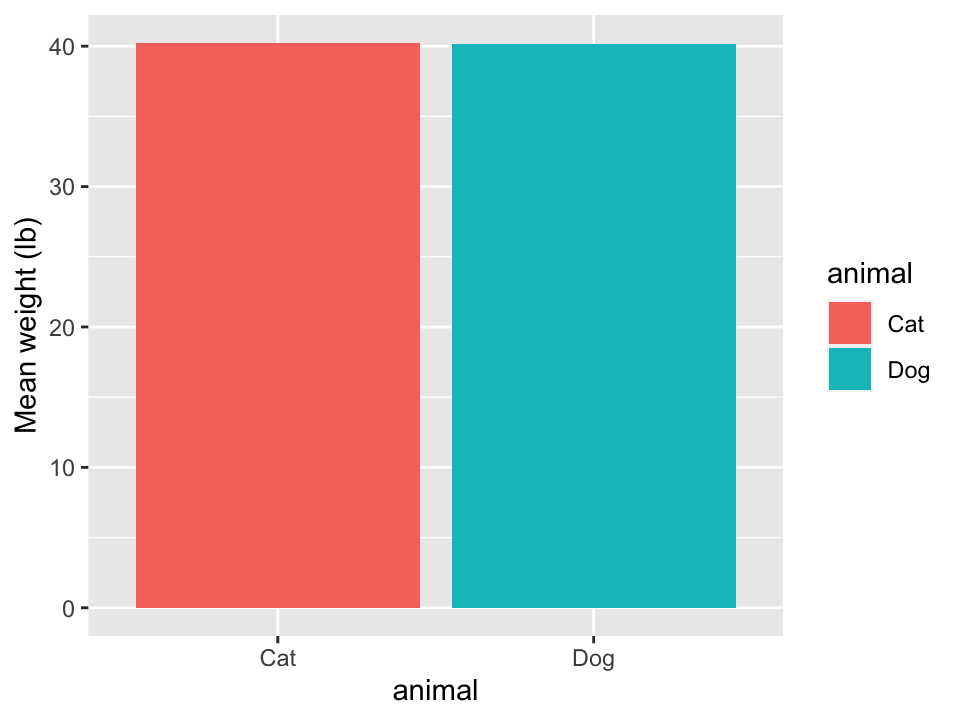
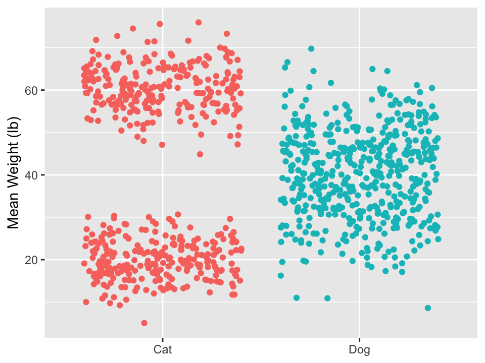
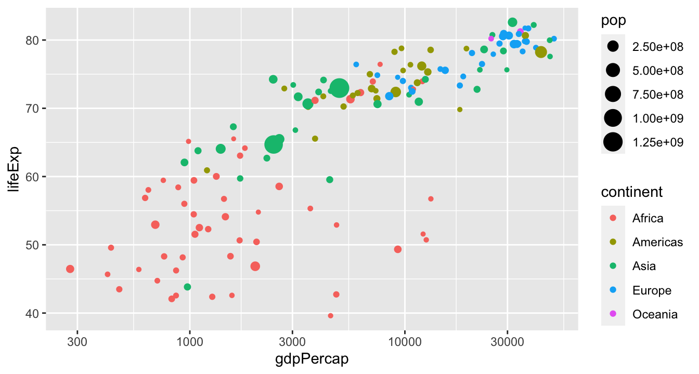
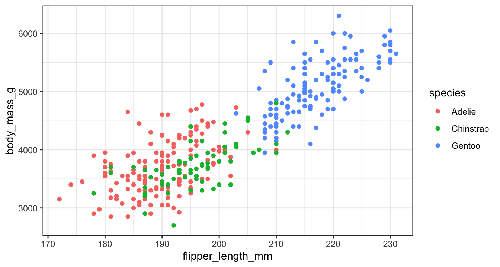
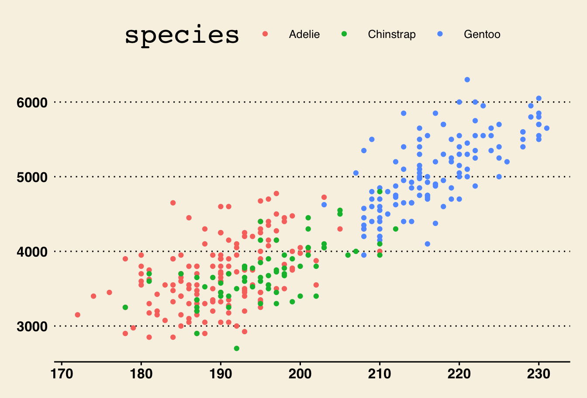

MATH167R: Data visualization
Warm-up
What does the following code do?
Warm-up

Overview of today
- Reviewing
ggplot2 - Advanced data visualization
- Styling R visualizations
Review: grammar of graphics
The three basic layers:
- Data: a data frame with all of the variables of interest
- Aesthetics: graphical dimensions like
x,y,color,shape, and more. - Geometries: the specific markings used to illustrate your variables and aesthetics.
Review: Cats and Dogs
Suppose we have the following data on animal weights. How can we compute the average weights of cats and dogs? [example from Andrew Heiss]
# A tibble: 10 × 2
animal weight
<chr> <dbl>
1 Cat 18.1
2 Dog 37.9
3 Cat 24.2
4 Dog 58.8
5 Dog 51.7
6 Dog 38.5
7 Cat 22.2
8 Dog 27.8
9 Cat 17.4
10 Cat 24.3Code for generating data
library(tidyverse)
# example from Andrew Heiss
set.seed(12)
animals <- tibble(animal = c(rep(c("Small cat", "Big cat"), each = 250), rep("Dog", 500))) |>
mutate(weight = case_when(
animal == "Small cat" ~ rnorm(n(), 20, 5),
animal == "Big cat" ~ rnorm(n(), 60, 5),
animal == "Dog" ~ rnorm(n(), 40, 10)
)) |>
mutate(animal = ifelse(str_detect(animal, "cat"), "Cat", "Dog"))Review: Cats and Dogs
# A tibble: 2 × 2
animal mean_wt
<chr> <dbl>
1 Cat 40.2
2 Dog 40.1How can we turn this into a visual?
Review: Cats and Dogs
In ggplot2, there are two geometries for bar plots: geom_col() and geom_bar().
- The height of the bars of
geom_col()represent numerical values in each group. - The height of the bars of
geom_bar()represent the number of rows for each group.
Review: Cats and Dogs
Review: Cats and Dogs

If possible, show the data
If possible, show the data

Review: Cats and Dogs
Takeaways:
- Data has to be in the right format to work with
ggplot2 - Geometries can be combined for more complex visualizations
- Only showing summary statistics can be misleading and can hide information.
Gapminder data
Gapminder data
- What changes do we see over time? What do we notice in this visualization?
- What questions arise? Do you have any doubts about this visualization?
Gapminder data
# A tibble: 6 × 6
country continent year lifeExp pop gdpPercap
<fct> <fct> <int> <dbl> <int> <dbl>
1 Afghanistan Asia 1952 28.8 8425333 779.
2 Afghanistan Asia 1957 30.3 9240934 821.
3 Afghanistan Asia 1962 32.0 10267083 853.
4 Afghanistan Asia 1967 34.0 11537966 836.
5 Afghanistan Asia 1972 36.1 13079460 740.
6 Afghanistan Asia 1977 38.4 14880372 786.Gapminder data
country continent year lifeExp
Afghanistan: 12 Africa :624 Min. :1952 Min. :23.60
Albania : 12 Americas:300 1st Qu.:1966 1st Qu.:48.20
Algeria : 12 Asia :396 Median :1980 Median :60.71
Angola : 12 Europe :360 Mean :1980 Mean :59.47
Argentina : 12 Oceania : 24 3rd Qu.:1993 3rd Qu.:70.85
Australia : 12 Max. :2007 Max. :82.60
(Other) :1632
pop gdpPercap
Min. :6.001e+04 Min. : 241.2
1st Qu.:2.794e+06 1st Qu.: 1202.1
Median :7.024e+06 Median : 3531.8
Mean :2.960e+07 Mean : 7215.3
3rd Qu.:1.959e+07 3rd Qu.: 9325.5
Max. :1.319e+09 Max. :113523.1
Gapminder data
Let’s work with the following data:
How do we recreate the following plot?
Gapminder data
Work with the people around you to recreate this plot:

Gapminder data
Hopefully, you produced something like this:
Playing with scales
Scales are another layer we can add on top of our plot:
What do you expect the output to look like?
Playing with scales
Playing with scales
Small multiples
“At the heart of quantitative reasoning is a single question: Compared to what? Small multiple designs, multivariate and data bountiful, answer directly by visually enforcing comparisons of changes, of the differences among objects, of the scope of alternatives. For a wide range of problems in data presentation, small multiples are the best design solution.”
Edward Tufte
Small multiples
We can often make comparisons clearer by splitting a plot into many “small multiples” which have the same axes:

Facets for small multiples
Small multiples are implemented in ggplot2 via the facet_wrap() and facet_grid() functions:
Gapminder data
Work with the people around you to recreate this plot:

Themes
ggplot2 provides a default theme: gray background, basic discrete color scheme, etc.
Other themes
However, ggplot2 also comes with additional themes that you can layer on top of your plots:
Other themes
Other themes
Other themes
Other themes can be obtained from the ggthemes package:
Other themes
Other themes
Themes
If you want finer control over your plot appearance, you can dive into the theme() function:
Themes
Within the theme function, we can manipulate various theme elements:

Themes
Other resources:
- Clara Granell’s ggplot2 Theme System Cheatsheet
- Andrew Heiss’s Ways to deal with long labels
- Chapter 8 of Kieran Healy’s Data Visualization
- How to create BBC style graphics